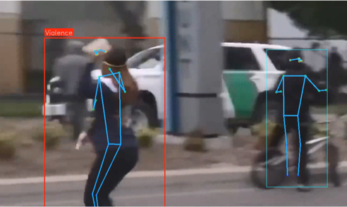
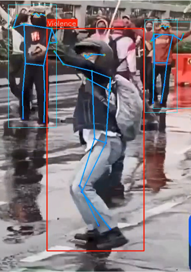
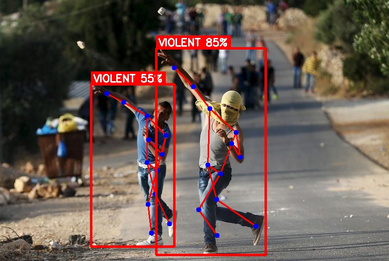
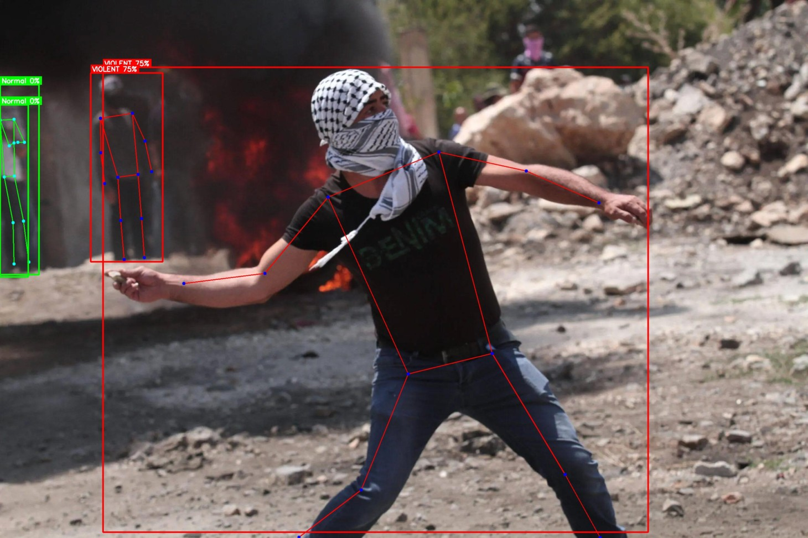
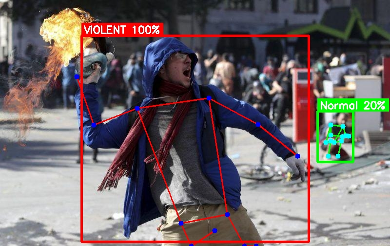
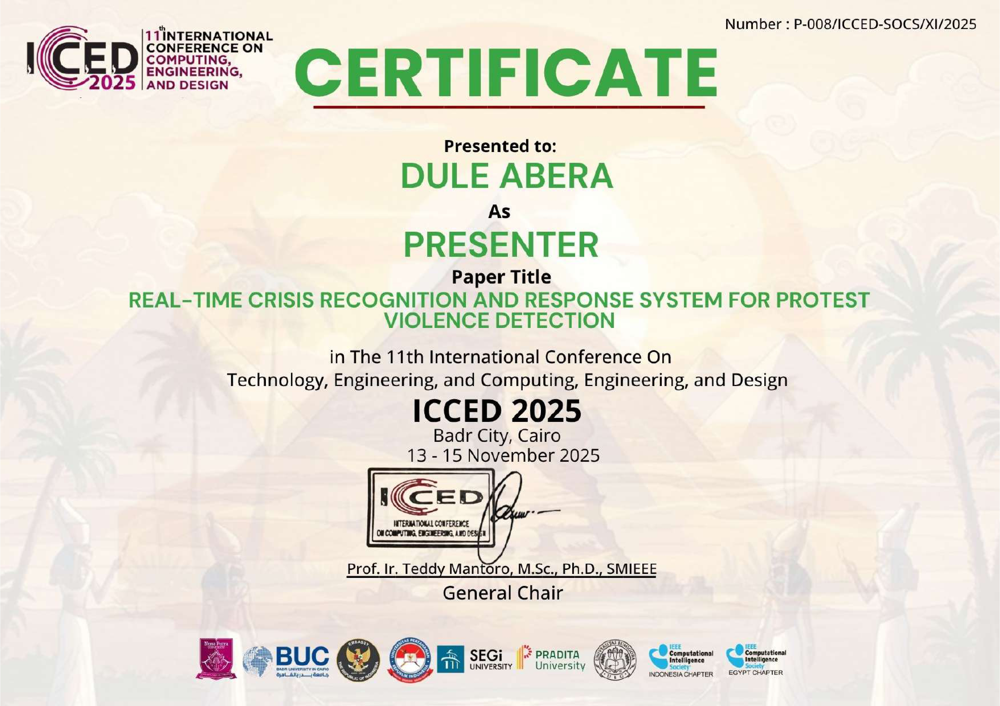

Architecture
Model Pipeline
The system processes sequences of video frames through a spatial CNN encoder followed by a temporal LSTM, enabling context-aware violence classification.
Detection Outputs
Detected Behaviour Samples
Sample output frames showing the system classifying both physical fights and object-throwing events with overlay annotations.






Live Demos
Detection Demo Videos
Recorded inference demonstrations across fight detection and object-throwing scenarios. Larger files may take a moment to buffer.
Technical Deep-Dive
Project Overview
This project builds a video-based violence detection system capable of identifying two types of aggressive behaviour: physical fights (punching, wrestling, brawling) and object-throwing. Unlike single-frame object detectors, this model processes sequences of frames to capture the temporal motion patterns that uniquely characterise violent acts.
The architecture combines a Convolutional Neural Network (CNN) to extract spatial features per frame with a Long Short-Term Memory (LSTM) network to reason over time. This lets the model understand not just what is in a frame, but the motion trajectory across frames — making it far more robust to false positives from static violent-looking poses.
Behaviour Classes Detected
- Physical Fighting — punching, kicking, brawling, wrestling
- Object Throwing — any thrown projectile directed toward people or property
- Non-violent — normal movement baseline (walking, standing, running)
Technical Implementation
- Input: fixed-length frame sequences (e.g., 16–32 frames per inference window)
- CNN backbone: pre-trained ResNet or MobileNet for spatial feature embedding
- LSTM layers: 2-layer LSTM captures temporal motion dynamics
- Sliding window inference for continuous real-time processing
- Temporal smoothing (majority vote over recent windows) reduces false alarm rate
- Output: per-window label overlaid on video frames in real time
Training & Data
- Dataset: custom-collected + publicly available violence / non-violence video clips
- Frame extraction at uniform intervals ensures temporal consistency
- Augmentation: random crop, horizontal flip, colour jitter, temporal jitter
- Loss: categorical cross-entropy with class-weighted sampling for imbalance
- Training: GPU-accelerated on Google Colab / Kaggle
Applications
- Automated CCTV monitoring in public spaces
- School and campus safety systems
- Stadium and event security
- Prison and detention facility surveillance
- Triggering alerts for first-responder dispatch
Conference Presentation
This research was published and presented at an international conference.
